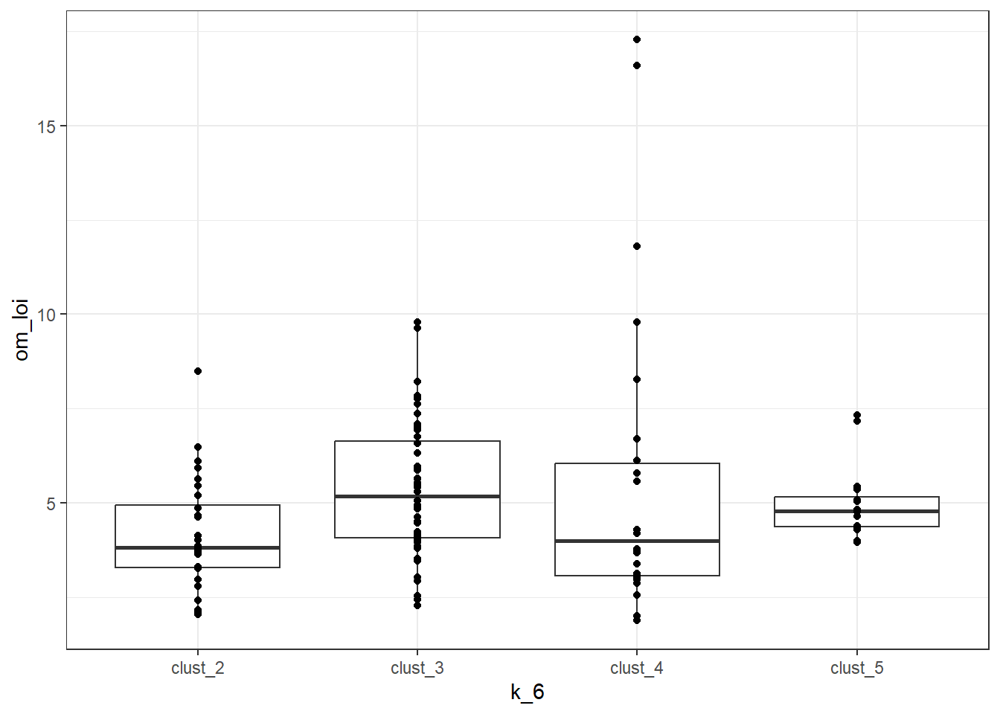
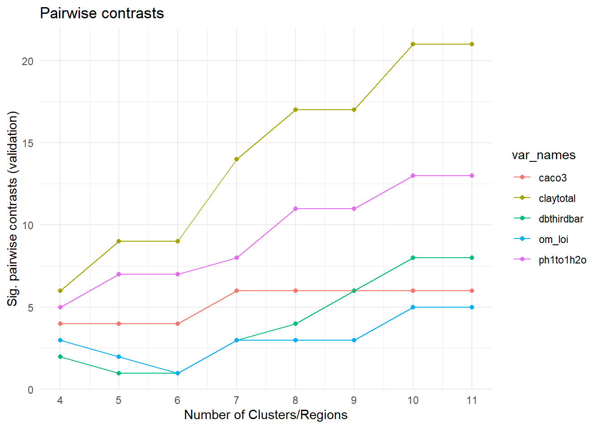
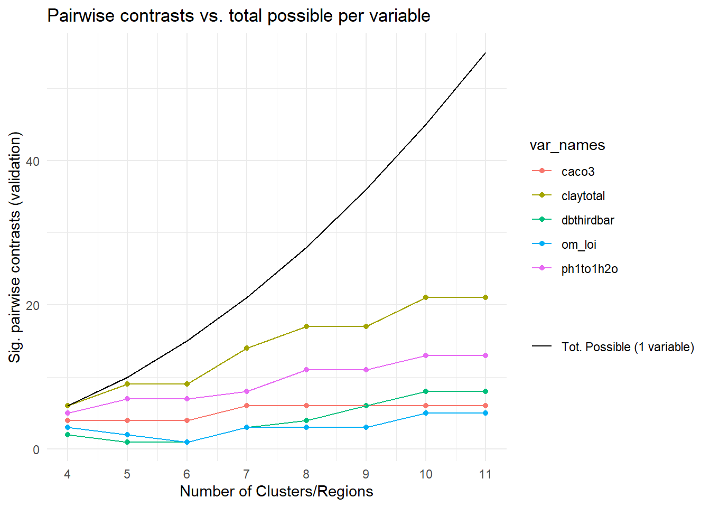
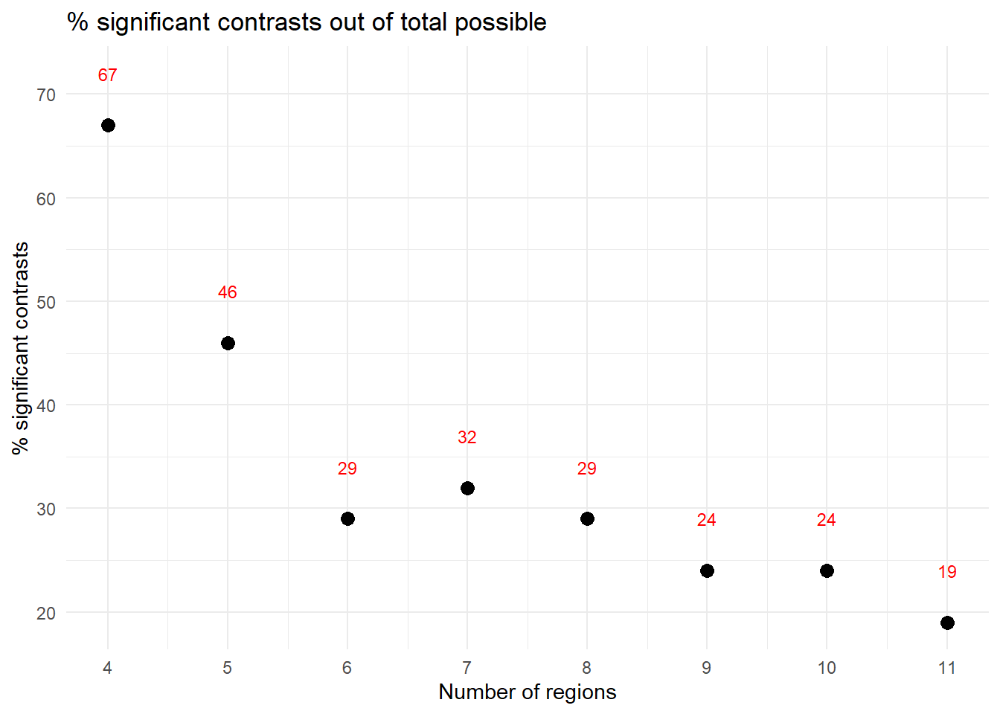
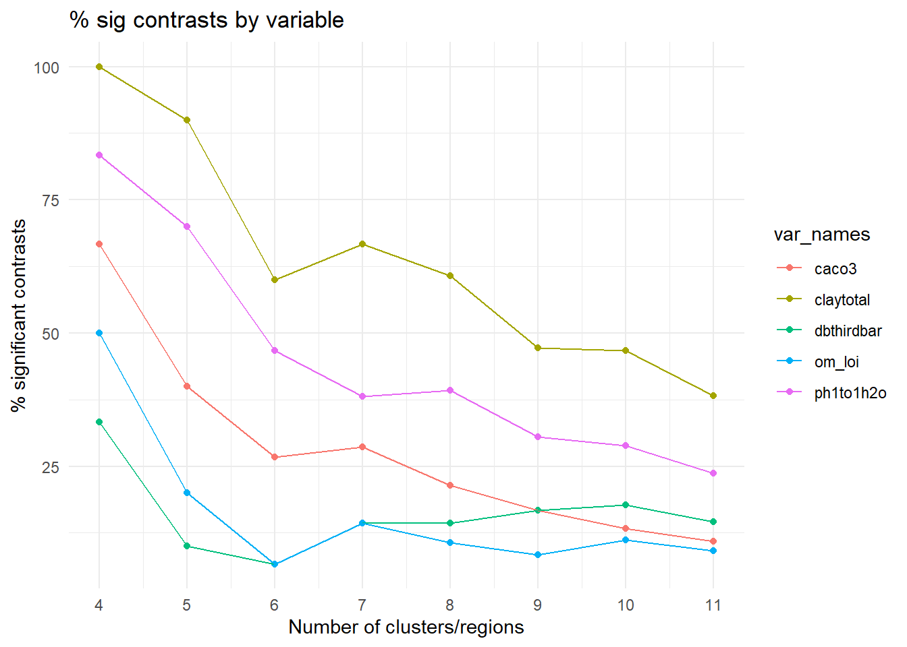

18 PCA Cluster pairwise comparisons
18.1 Overview
Pairwise comparisons with the validation data for the clusterings produced with PCA model version. We have 140 validation points
18.2 Validation points per cluster
Here I am illustrating how many independent validation points we have for each cluster assignment, for the different model options from k = 6, 8, 11.
Note that clusters with only 1 member won’t be included in pairwise comparison b/c not possible to calculate variance..
18.3 Soil properties for pairwise comparisons
Because our validation data points are coming from different projects / datasets, we don’t have exactly the same variables from each one. This is a reminder of which variables exist in the three sources we used for validation points:
- KSSL : clay, bulk density, lep, awc, ec, cec, pH, carbonates, organic matter, (est org C)
- CIG: clay, bulk density, pH, carbonates, organic matter, (est org C)
- SHI: clay, bulk density, pH, organic matter
In summary: all three datasets include bulk density, pH, organic matter, and clay, and KSSL and CIG include carbonates. So I think it makes sense to focus on plotting and doing pairwise comparisons with these variables specifically
18.4 Example pairwise: OM, k=6
Working out the steps I need to include in a function to do the pairwise comparisons.
# test case k=6 version and organic matter
test_dat <- val_dat %>%
select(val_unit_id, k_6, om_loi, claytotal, source) %>%
drop_na(om_loi)
# note only 1 observation for clust_1, need to drop it
# b/c can't calculate variance for the pairwise comparison w/ only 1 obx.
test_dat %>% count(k_6)test_dat_mult <- test_dat %>% filter(k_6 != "clust_1")
# plot to see distributions
test_dat_mult %>%
ggplot(aes(x = k_6, y = om_loi)) +
geom_boxplot() +
geom_point() +
theme_bw()
test_lm <- lm(formula = om_loi ~ k_6,
data = test_dat_mult)
# look at some diagnostic plots for our model
# note homogeneity of variance looks sketchy
performance::check_model(test_lm, check = c("normality", "homogeneity", "linearity"))
performance::check_homogeneity(test_lm)Warning: Variances differ between groups (Bartlett Test, p = 0.000).This shows how I would do pairwise t-tests with unpooled variance. This might be more appropriate than the ANOVA approach I originally tried, because the diagnostic plots above suggest that we don’t have homogeneity of variance for our validation dataset.
“For some examples, one can use both the pooled t-procedure and the separate variances (non-pooled) t-procedure and obtain results that are close to each other. However, when the sample standard deviations are very different from each other, and the sample sizes are different, the separate variances 2-sample t-procedure is more reliable.” Penn State STAT 800 “Applied Research Methods” 5.6.1.2
Note that the p-value adjustment method here is “holm”.
# view the standard (console) output
with(test_dat_mult, pairwise.t.test(om_loi, k_6, pool.sd = FALSE))
Pairwise comparisons using t tests with non-pooled SD
data: om_loi and k_6
clust_2 clust_3 clust_4
clust_3 0.011 - -
clust_4 0.412 0.953 -
clust_5 0.164 0.862 0.953
P value adjustment method: holm test_obj <- with(test_dat_mult, pairwise.t.test(om_loi, k_6, pool.sd = FALSE))
class(test_obj)[1] "pairwise.htest"biostat::make_cld(test_obj)# tidy output, filter to significant comparisons only
with(test_dat_mult, pairwise.t.test(om_loi, k_6, pool.sd = FALSE)) %>% broom::tidy() %>%
filter(p.value < 0.05)18.5 Function for pairwise comparisons
Arguments: soil property and k option (model version / number of clusters) and validation dataframe.
Returns: all pairwise comparisons in a dataframe
compare_clust_pairwise <- function(soil_var, k_opt, df) {
dat_no_na <- df %>%
select(val_unit_id,
all_of(k_opt),
all_of(soil_var)) %>%
drop_na(all_of(soil_var))
# can't do pairwise t-tests with only 1 obs in a
# group, so need to filter those out
n_obs_per_cluster <- dat_no_na %>%
count(.data[[k_opt]])
single_obs_clusters <- n_obs_per_cluster %>%
filter(n == 1) %>%
pull(.data[[k_opt]])
if(length(single_obs_clusters) == 0){
dat_subset <- dat_no_na
}else{
dat_subset <- dat_no_na %>%
filter(!(.data[[k_opt]] %in% single_obs_clusters))
}
soil_var_vec <- dat_subset %>% pull(soil_var)
clust_vec <- dat_subset %>% pull(k_opt)
pairs_obj <- pairwise.t.test(soil_var_vec,
clust_vec,
pool.sd = FALSE)
tidy_pairs_df <- pairs_obj %>%
broom::tidy()
cld_df <- biostat::make_cld(pairs_obj)
results_list <- list(pairs_df = tidy_pairs_df,
cld = cld_df)
return(results_list)
}18.6 Example function output
This is what the pairwise function I wrote above returns:
compare_clust_pairwise(soil_var = "ph1to1h2o",
k_opt = "k_8",
df = val_dat) $pairs_df
# A tibble: 21 × 3
group1 group2 p.value
<chr> <chr> <dbl>
1 clust_2 clust_1 1 e+ 0
2 clust_3 clust_1 1 e+ 0
3 clust_3 clust_2 1 e+ 0
4 clust_4 clust_1 1.66e- 1
5 clust_4 clust_2 2.39e-13
6 clust_4 clust_3 1.10e- 3
7 clust_5 clust_1 7.83e- 1
8 clust_5 clust_2 4.96e- 4
9 clust_5 clust_3 7.43e- 2
10 clust_5 clust_4 2.43e- 3
# … with 11 more rows
$cld
group cld spaced_cld
1 clust_1 abcd abcd
2 clust_2 a a___
3 clust_3 ab ab__
4 clust_4 c __c_
5 clust_5 bd _b_d
6 clust_6 c __c_
7 clust_7 d ___d18.7 Run pairwise comparisons
Here I create a dataframe to hold the results of the pairwise comparisons, then use map2() to iterate over the variables and cluster sizes, running all the tests.
# vars to compare on
var_names <- c("claytotal", "ph1to1h2o", "om_loi", "caco3", "dbthirdbar")
# all possible values of k (number of clusters)
cluster_opts <- glue("k_{c(4, 5, 6, 7, 8, 9, 10, 11)}")
# create df with all combinations of var_names x clusters
comp_template <- tidyr::crossing(var_names, cluster_opts)
# run the pairwise comparisons for each var and cluster size
diffs_df <- comp_template %>%
mutate(comps_all = map2(.x = var_names,
.y = cluster_opts,
.f = compare_clust_pairwise,
df = val_dat))
# unnest once to get the pairs_df and cld_df dfs
# as their own columns
diffs_unnest <- diffs_df %>%
unnest(comps_all) %>%
mutate(obj_names = names(comps_all))
# want to save pairs_df and cld_df dat separately, so filtering
# and then unnesting again to get rectangular data
pairs_dat <- diffs_unnest %>%
filter(obj_names == "pairs_df") %>%
unnest(comps_all) %>%
select(-obj_names)
write_csv(pairs_dat, "data/pca_pairwise_results_all.csv")
cld_dat <- diffs_unnest %>%
filter(obj_names == "cld") %>%
unnest(comps_all) %>%
select(-obj_names)
write_csv(cld_dat, "data/cld_display.csv")Now need to count how many of the tests have an adjusted p-value < 0.05. All of the p-values are adjusted with the Holm method.
count_sig_comps <- function(df){
df %>%
filter(p.value<0.05) %>%
nrow()
}
sig_diffs_df <- pairs_dat %>%
group_by(cluster_opts, var_names) %>%
nest(data = c(group1, group2, p.value)) %>%
mutate(n_sig_comps = map_int(data, count_sig_comps)) %>%
mutate(
num_regions = as.numeric(str_extract(cluster_opts, "[:digit:]+")),
possible_comps = (num_regions * (num_regions - 1)) / 2,
alpha_comps = round(possible_comps * 0.05, digits = 0)
) %>%
select(var_names,
cluster_opts,
num_regions,
data,
n_sig_comps,
possible_comps,
alpha_comps)
sig_diffs_summary <- sig_diffs_df %>%
select(var_names,
cluster_opts,
num_regions,
n_sig_comps,
possible_comps,
alpha_comps)
write_csv(sig_diffs_summary, "data/pca_pairwise_comparisons_summary.csv")18.8 Plot comparisons
18.8.1 All clusters

For context, this plot shows a black line for the total number of possible contrasts. Note that because we are showing each soil property variable separately, the “total possible” line illustrates the total number of possible comparisons for a single variable

Two other ways to contextualize the number of significant contrasts: 1) with a table, and 2) with a plot showing how the % significant contrasts (as a function of total possible) changes as the number of clusters goes up.

